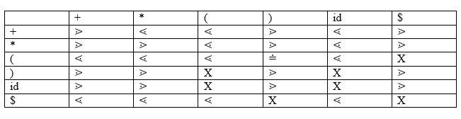
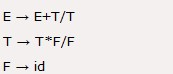
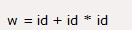
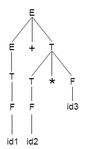
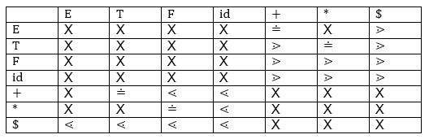
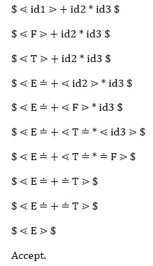

Answer:-
Operator precedence grammar is kinds of shift reduce parsing method.
It is applied to a small class of operator grammars.
A grammar is said to be operator precedence grammar if it has two
properties:
- No R.H.S. of any production has a∈.
- No two non-terminals are adjacent.
Operator precedence can only established between the terminals of the grammar. It ignores the non-terminal.
There are the three operator precedence relations:
- a ⋗ b means that terminal "a" has the higher precedence than terminal "b".
- a ⋖ b means that terminal "a" has the lower precedence than terminal "b".
- a ≐ b means that the terminal "a" and "b" both have same precedence.
Precedence table:

Parsing Action
- Both end of the given input string, add the $ symbol.
- Now scan the input string from left right until the ⋗ is encountered.
- Scan towards left over all the equal precedence until the first left most ⋖ is encountered.
- Everything between left most ⋖ and right most ⋗ is a handle.
- $ on $ means parsing is successful.
Example
Grammar:

Given string:

Let us consider a parse tree for it as follows:

On the basis of above tree, we can design following operator precedence table:

Now let us process the string with the help of the above precedence table:

Advantages-
The advantages of operator precedence parsing are-
- The implementation is very easy and simple.
- The parser is quite powerful for expressions in programming languages.
Disadvantages-
The disadvantages of operator precedence parsing are-
- The handling of tokens known to have two different precedence becomes difficult.
- Only small class of grammars can be parsed using this parser.
Important Note-
- In practice, operator precedence table is not stored by the operator precedence parsers.
- This is because it occupies the large space.
- Instead, operator precedence parsers are implemented in a very unique style.
- They are implemented using operator precedence functions.
Operator Precedence Functions-
- To decide the precedence relation between symbols, a numerical comparison is performed.
- It reduces the space complexity to a large extent.